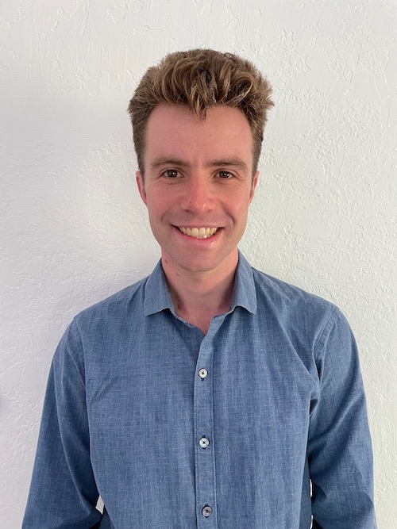

algorithms, theoretical machine learning, semidefinite programming, sum of squares optimization, convex hierarchies, bicycles. he/him.
I am a Miller fellow in the theory group at UC Berkeley, where I am hosted by Prasad Raghavendra and Luca Trevisan. Before that, I got my PhD at Cornell, advised by David Steurer.
In the 2021-2022 academic year I will join MIT as an Assistant Professor in the Department of Electrical Engineering and Computer Science.
If you are interested in working with me as a PhD student, please apply to MIT’s EECS PhD program!
CV (pdf) Google Scholar YouTube
Advice on applying for fellowships.
Advice on PhD applications.
Blog posts I wrote on clustering and learning high-dimensional mixture models using the SoS method (originally appeared on Windows on Theory. pdf
Notes on tensor decomposition using the SoS method (originally notes for a guest lecture at Stanford). pdf
A short general-audience video about my research. youtube
Slides from a high-level introduction to SoS for cryptographers, from this workshop. slides (pptx)
PC Member: RANDOM 2020, ITCS 2021, STOC 2022
Currently I am supported by a Simons Postdoctoral Fellowship Fellowship at UC Berkeley. In the past, I have received support from a Miller Postdoctoral Fellowship, a Microsoft PhD Fellowship, an NSF Graduate Research Fellowship, and a Cornell University Fellowship.
I am Samuel B. Hopkins. Maybe you are looking for Samuel Francis Hopkins?
Where to eat in Berkeley or Ithaca
6th Floor, Soda Hall
hopkins at berkeley.edu
{kind=link}
{kind=link}
{kind=link}